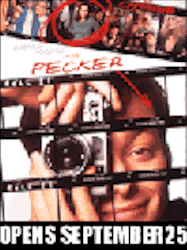

Contents | Features | Reviews | News | Archives | Store |
 |
|
| Movie Credits | Buy It! |
Pecker
Review by Elias Savada
Posted 25 September 1998
|  | Written and Directedby John Waters. Starring
Edward Furlong, Christina Ricci, |
The family, on the low end of the commercial totem pole, scraps along (although I kept asking myself how Pecker could afford to develop his own film and strike his own enlargements) until the shutterbug is discovered by Rorey Wheeler (Lulu Taylor) a dynamic New York art dealer and the boy’s celebrity status mushrooms overnight. Before you can say magazine cover, it’s a family feud of the unpretentious Baltimore cultural challenged inner citizens and the New York name-dropping intelligentsia. The media over-exposure turns the back-water family’s life upside-down. Their house is robbed, their nerves are frayed, and the welfare services -- in the guise of one Dr. Klompus (Bess Armstrong) -- clamp down on Chrissy’s sucrose sensitivity. All of Pecker’s subjects demand a cut of the action, while his main squeeze Shelley (Christina Ricci), a "stain goddess" at a local laundromat, leaves him as does his best friend Matt (Brendon Sexton III), once "the best thief in town," who gets caught shoplifting. It’s Job for everyone on a bad hair day.
This fairy tale does have a happy, and a terribly over-forgiving, ending. The New York art crowd head down to crab city for the grand opening of Pecker’s Place (his father’s bar hence rechristened). Rorey has since discovered a blind New Jersey photographer while Chrissy finds happiness snorting peas. In a big hurrah for Pecker, the crowd toasts to the "end of irony," while our hero contemplates his next move.
I do admire Waters for writing up a weird array of idiosyncratic personalities. You won’t find a menagerie like this in any other American filmmaker’s work. The problem is that Furlong is too weak an actor to carry the film, although Ricci has a good focus as she continues to strut her stuff in American independent cinema, following up bravura performances in Buffalo ’66 (in which she plays a another B-city ditsy to remarkable effect) and The Opposite of Sex. And the story’s too weak to carry the cast, the tale unable to support the broad, and often too brief, array of odd talent. It’s just not a grabber; merely a shrug off. Gross-out king Waters isn’t cutting edge anymore, either, with his bite nearly as sweet as Chrissy’s sweet tooth. Pecker peters out.
Contents | Features | Reviews | News | Archives | Store
Copyright © 1999 by Nitrate Productions, Inc. All Rights Reserved.